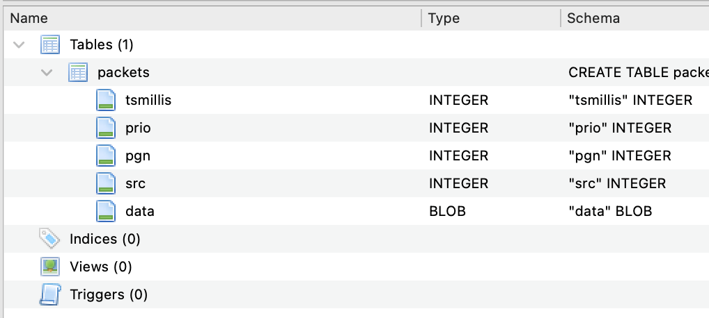
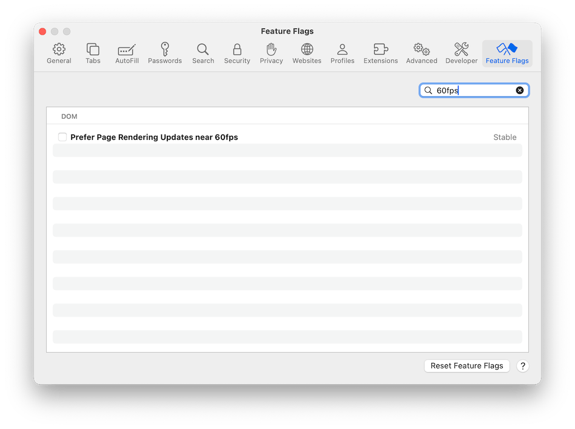

In day to day use, you will probably never need any of this. However, it's useful and should be documented, so we can expect this page to grow over time.
What does 'Insufficient GPS data' mean? This happens when either there is no GPS data at all, or the GPS is providing location but not velocity. In testing, some GPS's sent invalid velocity information when moored and generally fixing the problem is merely a question of waiting until the boat is moving and/or taking a longer capture.
What does the import warning 'AttitudeData: ignored because not sourced from compass' mean? This is a mere warning showing the number if times attitude data was found on the NMEA bus but it was not sourced from the compass. If See Sailing finds a compass that provides attitude data it uses that in preference to other sources.,
Why does a recording show different lengths from capture to display (shorter)? See Sailing 'edits' the capture to exclude data from the start where speed over ground is less than one knot. This does not apply to B&G imports, however.
What is the gateway's power consumption? The gateway consumes around 35ma (1 LEN).
What is the format of the exported data? Exported data is a sqlite database consisting of a single table...
The fields are...
tsmillis timestamp when the packet was received by the phone in milliseconds since the epoch.
prio the priority level of the message (mostly irrelevant).
pgn the PGN number of the received message.
src NMEA source ID of the received message.
data the PGN specific data carried by the message.
See Sailing only receives NMEA packets with a destination value of 255, hence the destination field is not recorded
Right now, See Sailing expects CSV's to be formatted to either B&G Hercules or B&G Triton specifications in codepage 1252 (saved by Windows). More specifically it is looking for headers containing the following strings:
'Date/Time'
'latitude' and 'longitude'
'Speed Over Ground' and 'Course Over Ground'
'Heading' and 'Magnetic Variation'
'Apparent Wind Speed' and 'Apparent Wind Angle'
'Velocity Made Good'
'True Wind Direction', 'True Wind Speed' and 'True Wind Angle'
'Heel' and 'Trim'
'Rudder Angle'
The fields are expected to be there even if (for instance) there's no rudder angle data. If you have some Hercules or Triton log files that don't fulfill this specification or otherwise will not import please send them to me and I'll see what I can do.
Some Apple laptops have a display marketed as "Liquid XDR" or with "Pro Motion". These displays can run at up to 120fps but not if you're using Safari as your web browser. To fix this, go to Safari, Settings, Feature flags, and un-check "Prefer Page Rendering Updates near 60fps". See Sailing will run quite happily at 120fps and it does make quite a difference as to how it feels.
In practice this advice probably only applies to MacBook Pro models with the "Apple Silicon" (M-something) processor.
Chrome does not have the 60fps problem and will run at full speed.
The URL created when the 'clipboard' icon is clicked uses a simple format whereby four parameters are combined into a traditional query string. The parameters are:
t the time within the recording to display as unix epoch time.
r whether or not the recording is running (true) or stopped.
s the currenty selected speed multiple.
c camera x,y,z position (units are opaque).
See Sailing performs analysis according to the uploading format. For B&G, since their products are marketed as "processors", it does effectively nothing and merely presents the data as it is returned. Expedition logs are treated as raw data and hence pass through a number of internal filtering processes. The returned data is separated into two separate JSON formatted files, the metadata file and (obtained when you click 'meta') and the analysed data itself (from clicking 'analysed').
The Metadata is designed to be small and allow the web application to begin working on the scene while the vast majority of the data is downloaded. It consists of:
t_start t_end are the start and end times as unix epoch times. No attempt is made to convert between different time zones.
t_frame the number of seconds represented by a single frame of data. IE the inverse of frame rate.
lat_start lon_start the latitude and longitude of the first point in the recording. This is not necessarily the same as the point marked as 'start' by the 'Set Start' button.
sog_max the maximum speed over ground achieved during the recording in knots.
water_referenced whether or not water referenced calculations were used during the analysis (1 is True).
variation the (assumed constant) magnetic variation of the recording in degrees.
features features enabled during the analysis of the data.
start_state the state when "Set Start" was clicked. Uses the same schema as for the shareable location URL.
legs an array describing the legs found when analysing the data. Each leg is described as thus:
type either "beat", "reach" or "run".
start end the start and end of the leg as unix epoch times.
mean_twd the average true wind direction across the leg. This is calculated from averaging the reported (or calculated) true wind direction across the duration of the leg and not a geometric calculation considering the start and end positions.
manoeuvres an array of manoeuvres found when analysing the leg. A manoeuvre is defined as when the true wind angle passes from positive to negative (or vice versa).
start end the start and end of the manoeuvre as unix epoch times.
stretches an array of stretches - the portions of 'straight line' sailing that exist between manoeuvres.
start end the start and end of the stretch as unix epoch times.
starboard whether the stretch is sailed on starboard tack, being defined as the true wind angle being positive.
nmea_sources an array describing nmea sources found during analysis consisting of:
A tuple of the nmea source ID and list of See Sailing channels detected as coming from that source.
disabled_nmea_sources a list of the nmea source ID's that were disabled for analysis.
The Analysed Data has a key named 'schema' that holds the schema; and a key named 'dframes' that holds the individual data frames. Note that the time for each data frame is calculated from the timings indicated in the metadata and (therefore) the analysed data cannot be considered complete without it.
The presence of an item in the schema indicates that the channel it refers to is available in the data. Note also that while these channels are presented 'logically paired' where necessary, the data itself is stored as a flat list.
_lat _lon the latitude and longitude of this particular datapoint.
cog sog course over ground (degrees true) and speed over ground (knots).
heading heading (degrees magnetic).
pitch roll pitch and roll (degrees).
wspeed wangle apparent wind speed (knots) and angle relative to centreline (degrees, starboard positive).
twspeed twangle ground refererenced true wind speed (knots) and angle relative to centreline (degrees, starboard positive).
twdirection ground referenced true wind direction (degrees true).
vmg velocity made good in the direction of the true wind (knots).
rudder rudder angle (degrees, starboard positive).
wtwspeed wtwangle water referenced true wind speed (knots) and angle relative to centreline (degrees, starboard positive).
A leading underscore shows that the data is not to be presented as a human readable quantity, others are rounded to a suitable precision.